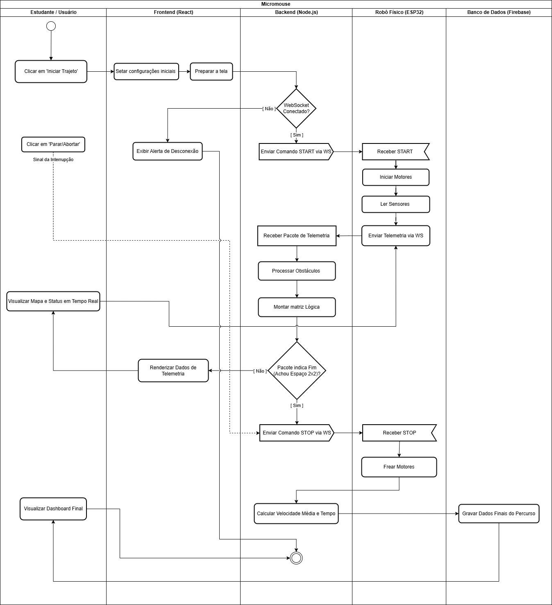
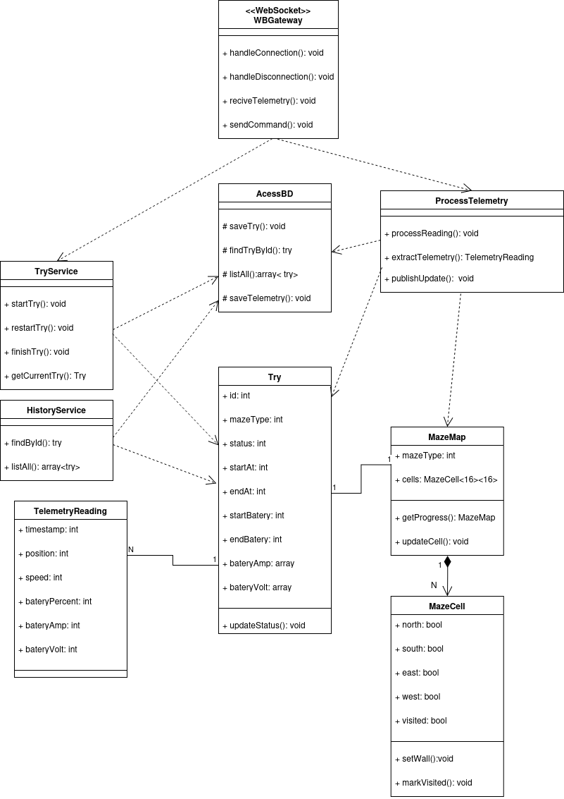
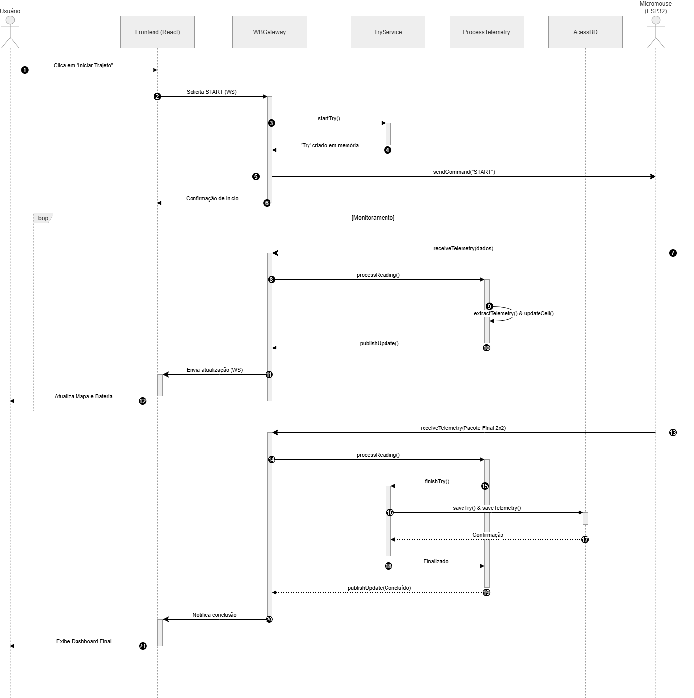
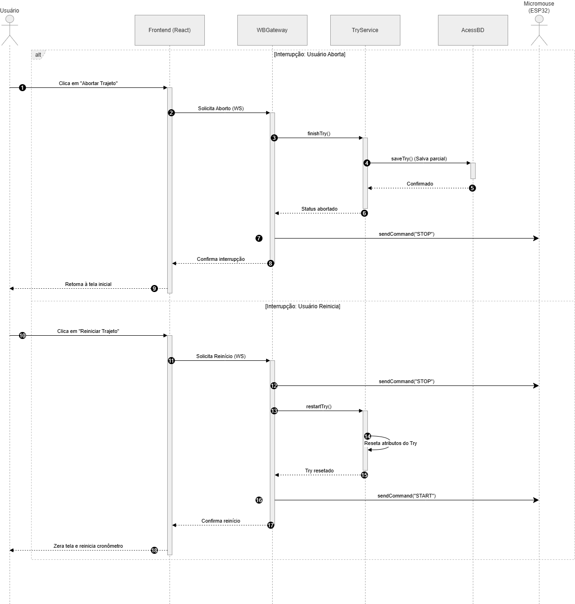
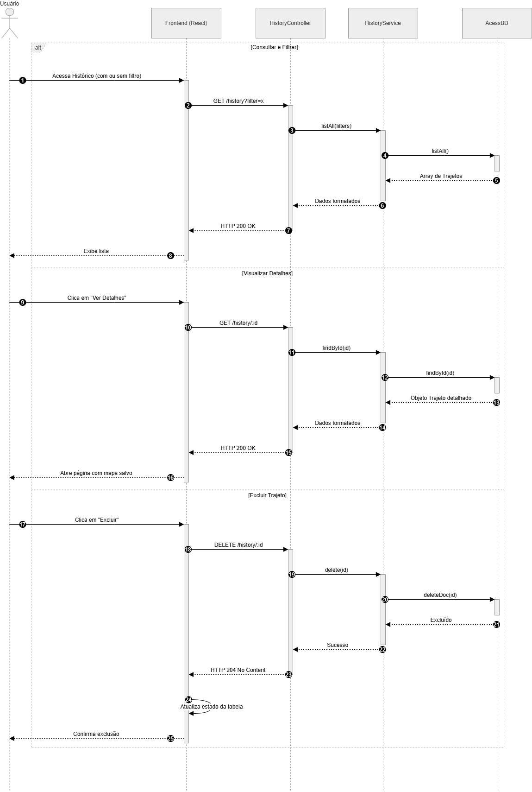
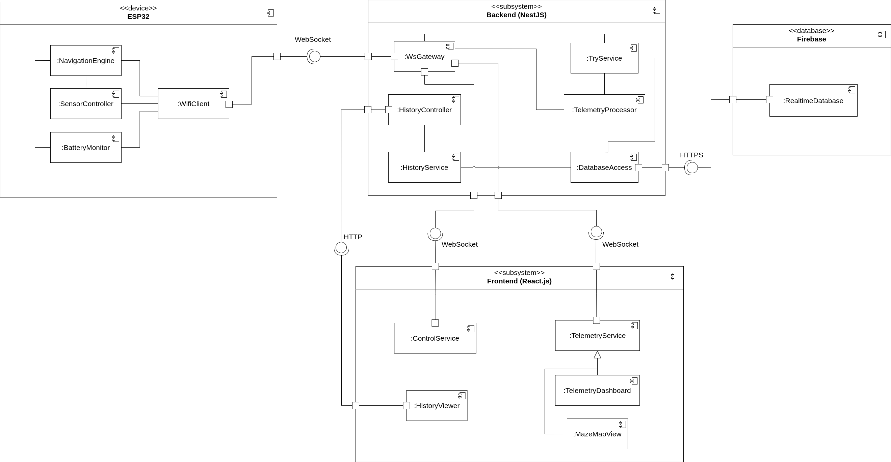
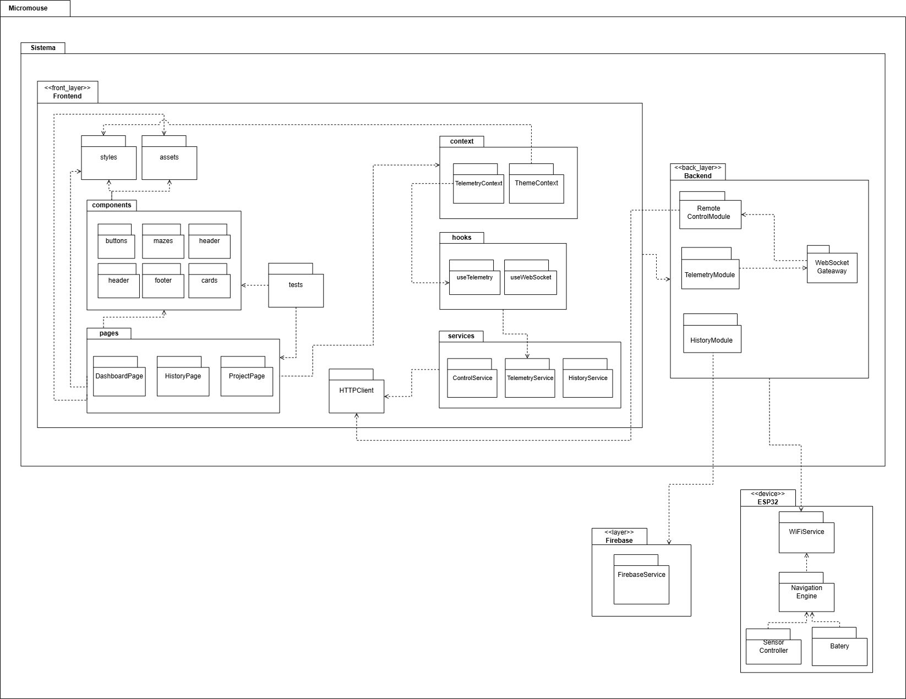
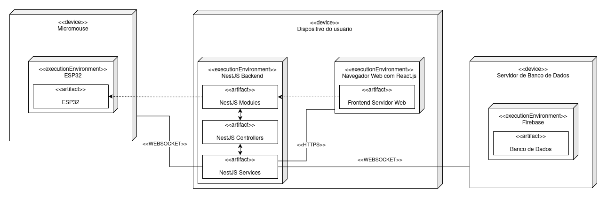
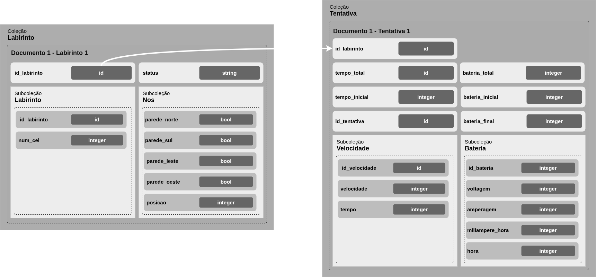

Descrição de Software
1. Visão Lógica do Software
1.1 Diagrama de Atividades
O Diagrama de Atividades descreve o comportamento funcional do sistema web do projeto XAROPi. A modelagem utiliza raias (swimlanes) para organizar o fluxo e representar a separação entre os subsistemas da arquitetura.
O fluxo demonstra a interação entre o estudante, o sistema web e o hardware do micromouse, contemplando atividades como envio de comandos, processamento de telemetria, renderização do mapa e armazenamento do histórico de execução.
Figura 1 - Diagrama de Atividades de Software XAROPi

Fonte: Autoria de Marjorie Mitzi
1.2 Diagrama de Classes
O Diagrama de Classes representa a estrutura lógica do sistema, evidenciando as classes responsáveis pelo gerenciamento da telemetria, comunicação WebSocket, persistência de dados e renderização das informações no frontend.
O modelo também demonstra os relacionamentos entre os módulos do backend, frontend e banco de dados, permitindo visualizar a organização orientada a objetos da aplicação.
Figura 2 - Diagrama de Classes do Sistema

Fonte: Autoria de Isaque Camargos
2. Visão de Processos do Software
2.1 Diagrama de Sequência: Fluxo de Execução Principal
O diagrama apresenta o fluxo principal de execução do sistema durante uma corrida do micromouse. O modelo demonstra a comunicação em tempo real entre o ESP32, o backend, o frontend e o banco de dados.
A sequência contempla o envio contínuo de telemetria, atualização da interface e persistência automática das informações ao final da execução.
Figura 3 - Diagrama de Sequência: Fluxo de Execução Principal

Fonte: Autoria de Marjorie Mitzi
2.2 Diagrama de Sequência: Fluxo de Interrupções e Resets
O diagrama representa os fluxos de interrupção do sistema, contemplando ações de parada manual, reinicialização e abortamento da corrida.
A modelagem evidencia o tratamento de eventos assíncronos e a manutenção da consistência do estado da aplicação durante situações excepcionais.
Figura 4 - Diagrama de Sequência: Fluxo de Interrupções e Resets

Fonte: Autoria de Marjorie Mitzi
2.3 Diagrama de Sequência: Recuperação de Histórico
O diagrama demonstra o fluxo de recuperação de execuções armazenadas no banco de dados.
A comunicação entre frontend, backend e Firebase permite consultar trajetos anteriores e apresentar métricas históricas de desempenho do robô.
Figura 5 - Diagrama de Sequência: Recuperação de Histórico

Fonte: Autoria de Marjorie Mitzi
3. Visão de Implementação de Software
3.1 Diagrama de Componentes
O Diagrama de Componentes apresenta a decomposição arquitetural do sistema em módulos responsáveis pela navegação, telemetria, controle e persistência dos dados.
A modelagem evidencia a interação entre o firmware executado na ESP32, o backend em NestJS, o frontend em React.js e o banco de dados Firebase.
Figura 6 - Diagrama de Componentes

Fonte: Autoria de Othavio Araújo Bolzan
3.2 Diagrama de Pacotes
O Diagrama de Pacotes demonstra a organização hierárquica dos módulos do sistema e seus relacionamentos de dependência.
A estrutura divide o software em pacotes de frontend, backend, firmware da ESP32 e persistência de dados, facilitando a compreensão da arquitetura lógica da aplicação.
Figura 7 - Diagrama de Pacotes

Fonte: Autoria de Samuel
4. Visão de Implantação do Software
4.1 Diagrama de Implantação
O Diagrama de Implantação apresenta a disposição física dos componentes do sistema e os canais de comunicação utilizados entre os subsistemas.
A modelagem evidencia a troca de dados via WebSocket entre o micromouse, o sistema web e o Firebase, além da execução do frontend e backend no dispositivo do usuário.
Figura 8 - Diagrama de Implantação do Sistema

Fonte: Autoria de Ludmila Aysha
5. Visão de Dados
5.1 Diagrama de Estrutura de Documentos
O Diagrama de Estrutura de Documentos representa a modelagem dos dados persistidos no Firebase.
A estrutura demonstra a organização das coleções e documentos utilizados para armazenar informações de trajetórias, telemetria, métricas de desempenho e históricos de execução do micromouse.
Figura 9 - Diagrama de Estrutura de Documentos

Fonte: Autoria de Othavio Araújo Bolzan
Histórico de Versões
| Versão | Data | Descrição | Autor(es) |
|---|---|---|---|
| 1.0 | 11/05/2025 | Criação do arquivo | Othavio Araújo Bolzan |
| 2.0 | 11/05/2025 | Adição dos diagramas | Othavio Araújo Bolzan |